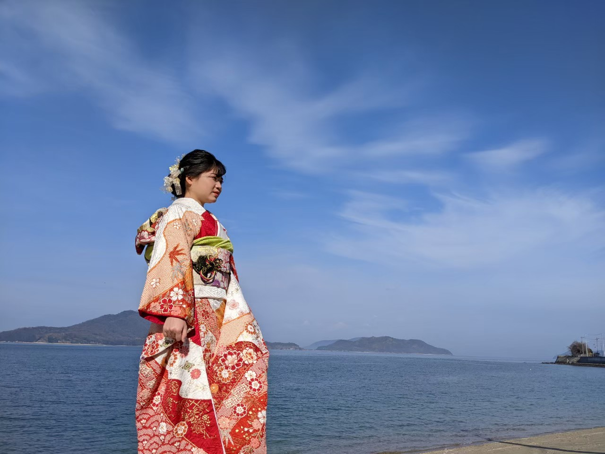
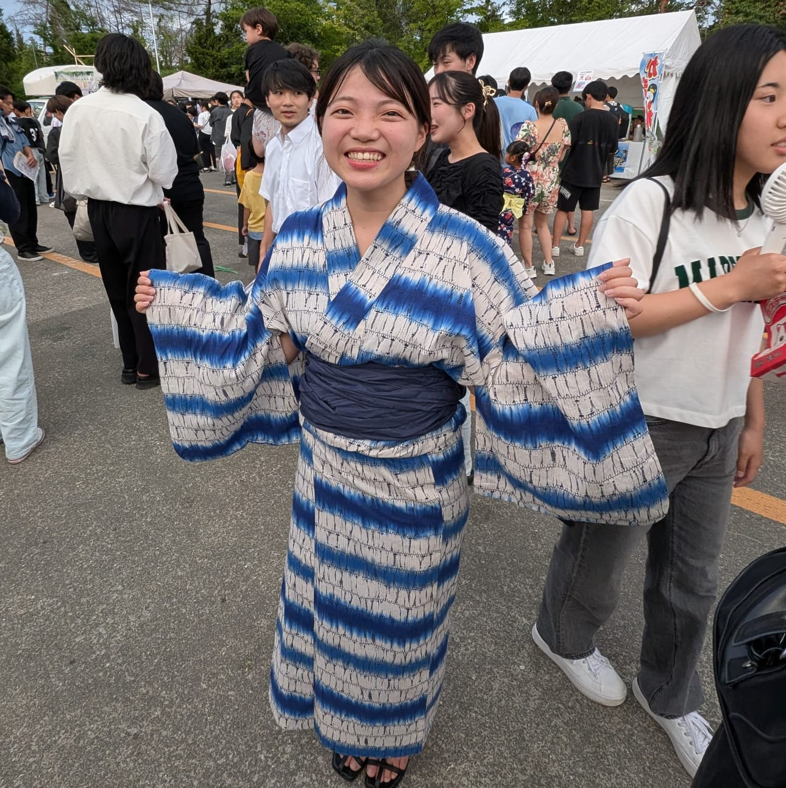
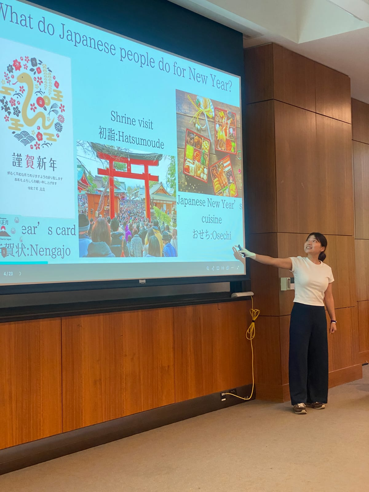
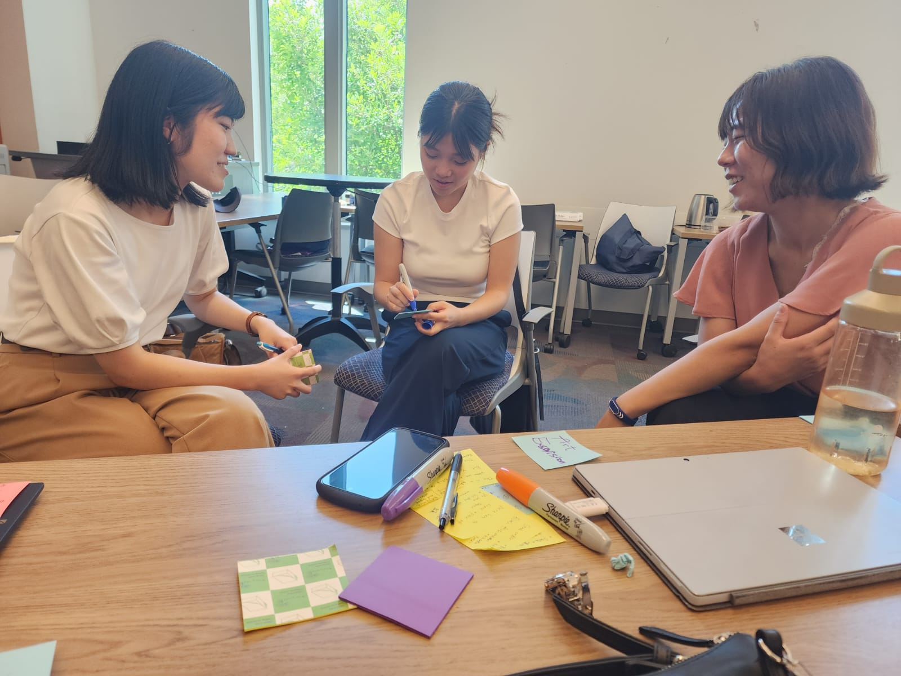
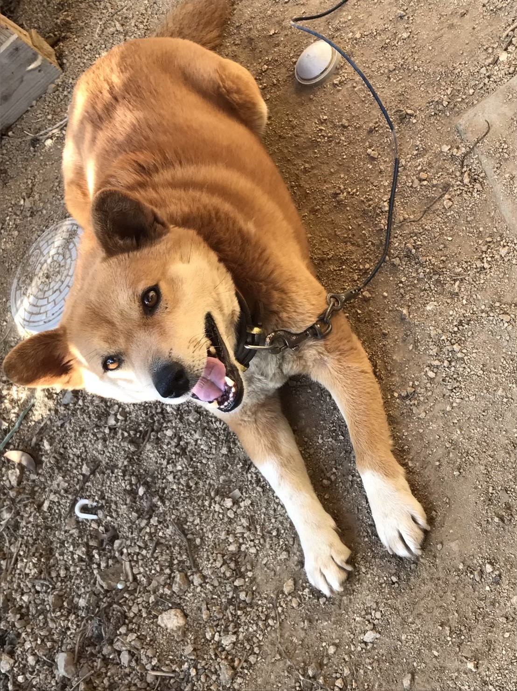
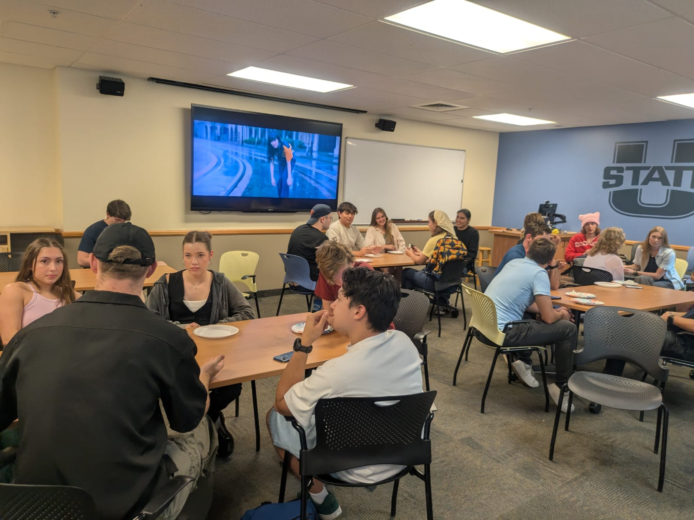
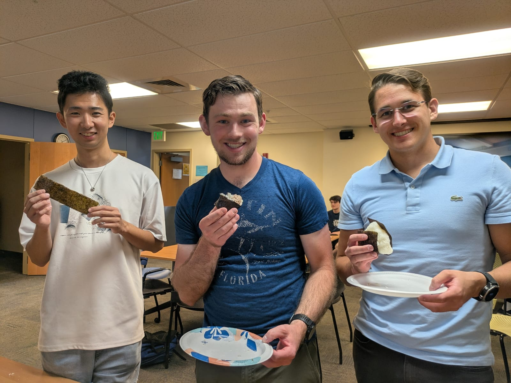
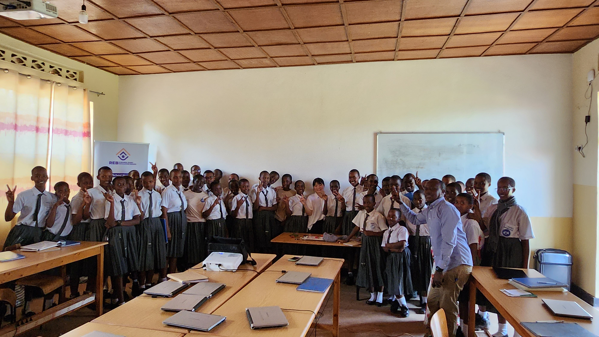
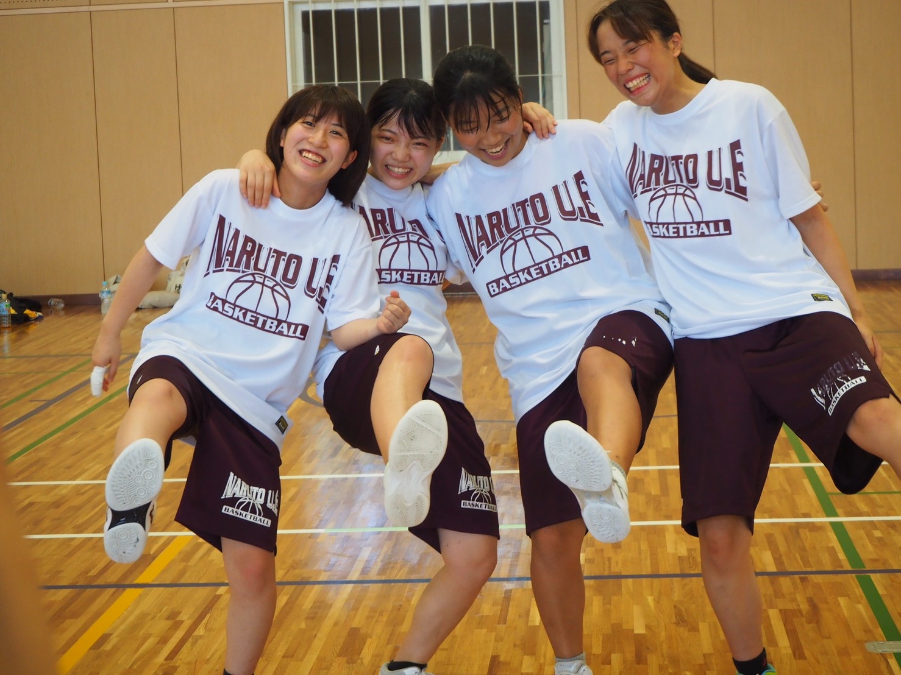
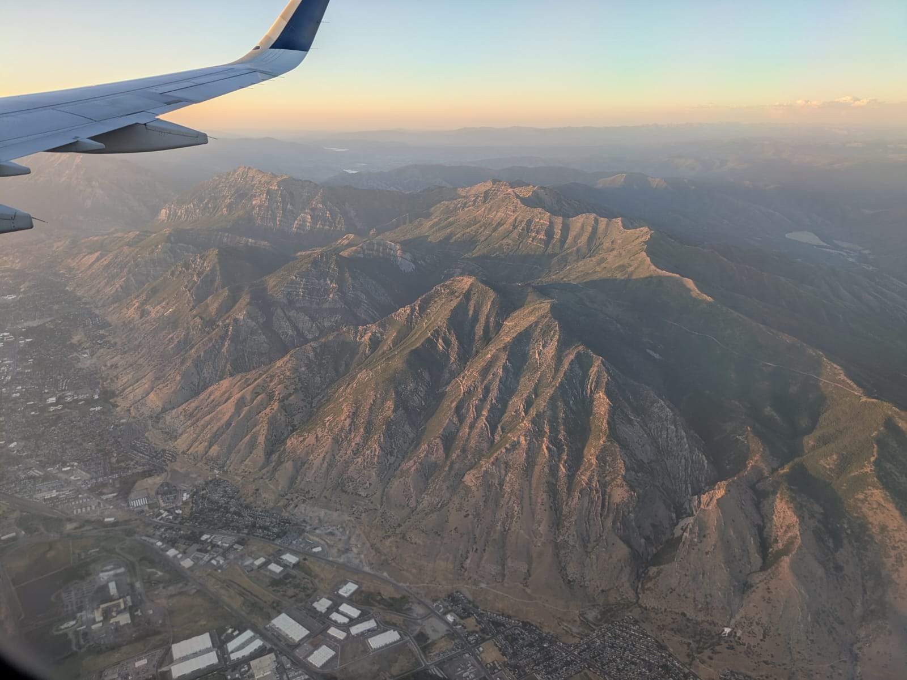

About Me
Shino Manabe
Hello! I'm the Japan Outreach Initiative (JOI) Program Coordinator at Utah State University. My mission is to share the rich and diverse culture of Japan with the community in Logan, Utah. Through engaging workshops, presentations, and cultural events, I hope to foster a deeper understanding and appreciation for Japan.
My Journey
My passion for cultural exchange began with my grandmother, who was a master of calligraphy and flower arranging. Growing up, I was immersed in the traditions that celebrate the beauty of each season. This upbringing instilled in me a deep love for my culture and a desire to share it with others.
A transformative experience in Indonesia, where I had the opportunity to introduce Japanese culture to a new audience, solidified my path. It was there I realized the power of cultural exchange to connect people and build bridges of understanding.

A Glimpse Into My Life











